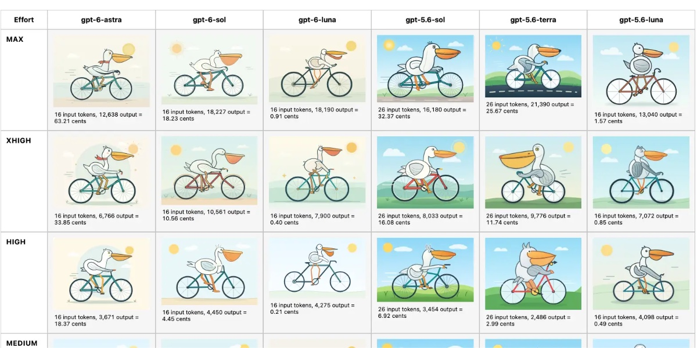
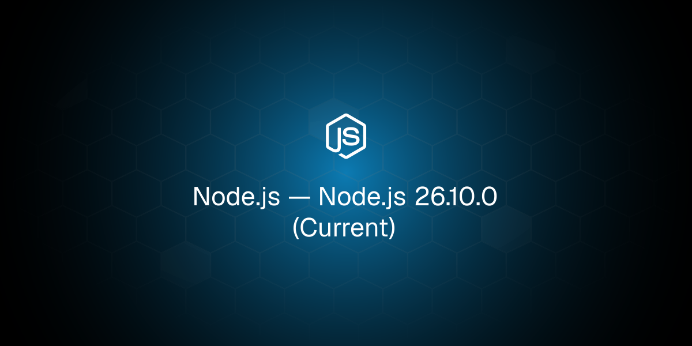
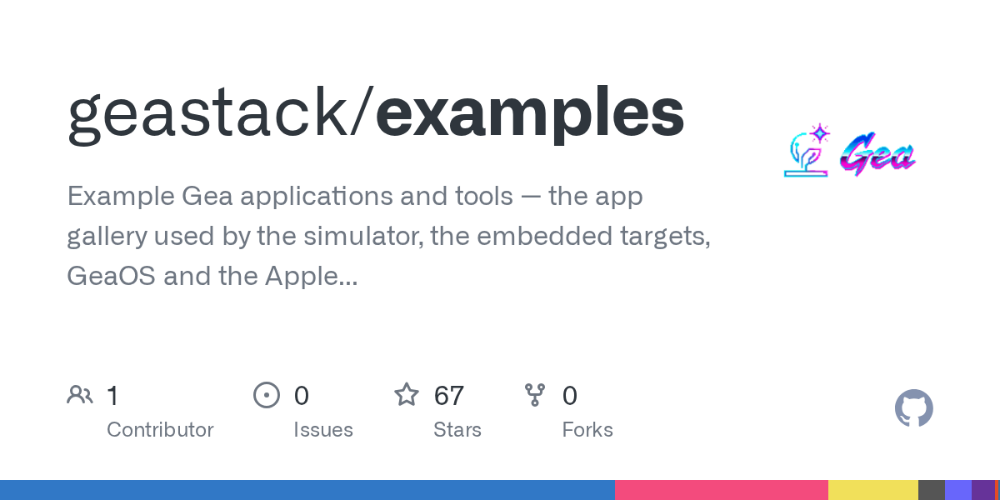
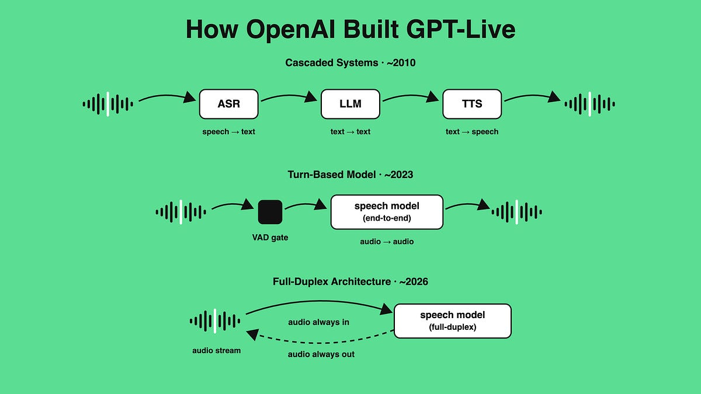
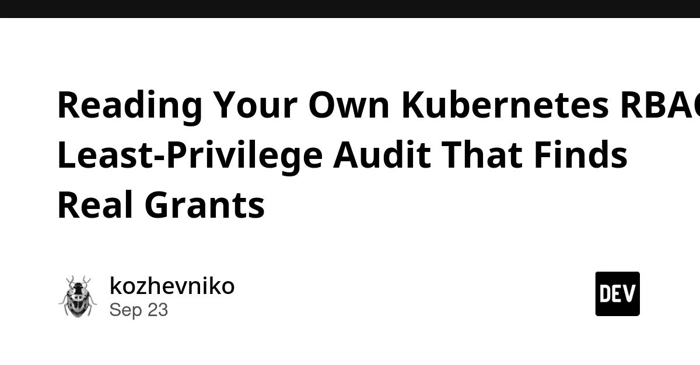
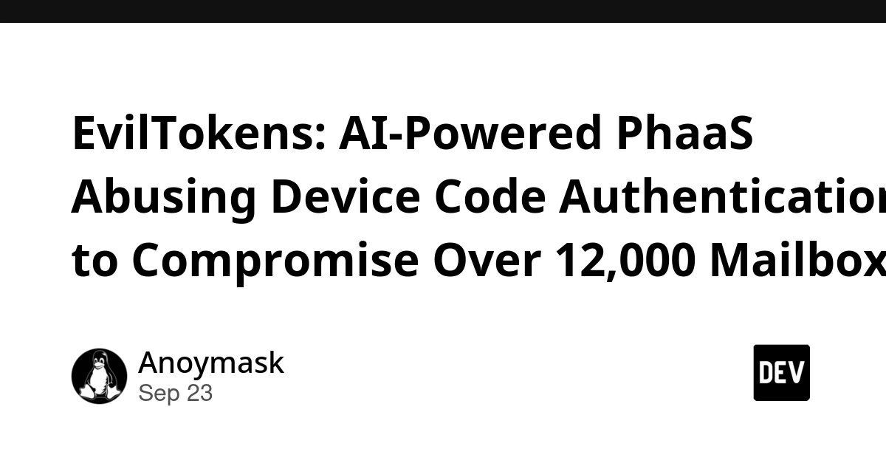
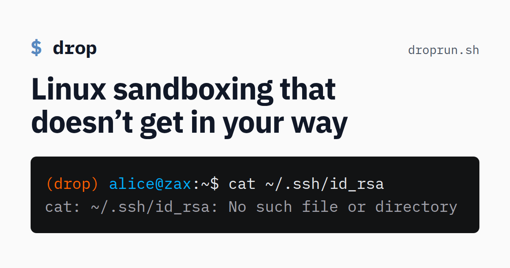
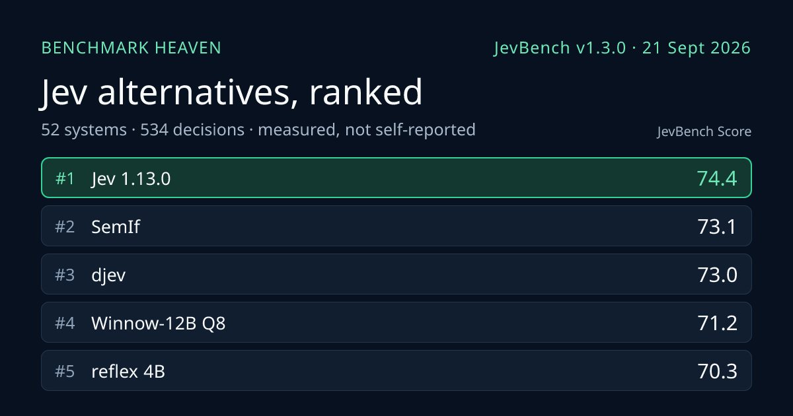

🔥 Top 3 (must read)
Claude Opus 5.5, GPT-6 Sol, GPT-6 Luna, and a new price war
Anthropic released Claude Opus 5.5. About one hour later, OpenAI released GPT-6 Sol and GPT-6 Luna. This came one day after Grok 4.7 and MiMo v2.6, and Simon Willison says it is the start of a new price war. Independent tests and prices for Opus 5.5 are on Artificial Analysis (HN discussion). Why it matters: Claude Code and the other coding agents your team uses may soon get stronger and cheaper. Now is a good time to look again at which models and plans the team pays for.

Node.js 26.10.0 (Current)
This is a new release on the Node.js 26 "Current" line. The Current line is where new features ship before they reach LTS (the long-term support version). Why it matters: Your backends run on Node. Read the changelog before these features reach LTS, and try them in CI first.

Native apps written in TypeScript and CSS
This is a set of examples for building native apps with only TypeScript and CSS. It got good attention on Hacker News (87 points, 32 comments). Why it matters: It is one more option next to Flutter and React Native for a team that already knows TypeScript and React. It is worth a look before your next choice of mobile or desktop stack.

🛠 Tools & releases
Node.js 26.10.0 (Current)
: new release on the Current line.
geastack examples
: native apps built with TypeScript and CSS.
🤖 AI for developers
Claude Opus 5.5
: the new top Anthropic model. Price and performance analysis here.

llm 0.36
adds
gpt-6-sol and gpt-6-luna. llm-anthropic 0.29 adds claude-opus-5.5. With these, you can try the new models from the command line on the same day they come out.S
How OpenAI built GPT-Live
: ByteByteGo explains the real-time voice system from start to end. They talked with engineers from the GPT Voice team, including Justin Uberti, who created WebRTC. It is a good system-design case study.

👔 Engineering & teams
Reading your own Kubernetes RBAC: a least-privilege audit
: RBAC is Kubernetes' role-based access control, the rules for who can do what in the cluster. The post shows how to use the cluster's own RBAC data to find extra grants nobody meant to give. One common example is accounts that can read every secret in every namespace.

Spotlight on SIG Apps
: meet the Kubernetes group that owns Deployments, StatefulSets, DaemonSets and Jobs, and see what they work on now.
K
EvilTokens: device code phishing hits 12,000+ mailboxes
: this is a summary of a Microsoft report. Attackers abuse the OAuth device code login flow at large scale. If your apps or company SSO allow device code login, this one is useful to read.

🎯 For me
Opus 5.5 + the price war: check your team's Claude Code and Copilot costs this week. Prices are moving.
Node.js 26.10.0: read the changelog for your Node backends.
Native apps in TypeScript + CSS: a new cross-platform option to compare with Flutter.
K8s RBAC audit: a practical task you can give to a DevOps or SRE person on your team.
💡 App ideas & indie builds
Drop
: a rootless Linux sandbox with gVisor support (HN). "Rootless" means it runs without admin rights. The problem it solves: running code you don't trust, like AI agent output or random scripts, without risk to your machine. Idea for you: a safe local "agent box" is a need many developers share right now.

AI·rete·RAG
: a Rete rule engine makes the decision, and RAG explains why (HN). The problem: LLM answers often cannot be audited. Here the rules decide, and the AI only explains the result. Idea for you: this pattern fits any app that must give clear, repeatable answers, such as eligibility checks or pricing rules.
A
Training a model to identify AI web content from structure alone
: it finds AI-written pages from the page layout, not the words (HN). The problem: telling AI-generated content from human content at scale. Idea for you: a browser extension or content-quality filter could be built on top of this.

JevBench
: a benchmark for typed decision models that you can re-run and get the same results (HN). The problem: model claims that are hard to check. Idea for you: small, focused, reproducible test harnesses for one kind of task can be a product.

🎓 Try this
Run the least-privilege audit from Reading Your Own Kubernetes RBAC on one of your clusters. Start with one question: "Who can read secrets in all namespaces?" The post says most clusters have such accounts, and nobody meant to create most of them.